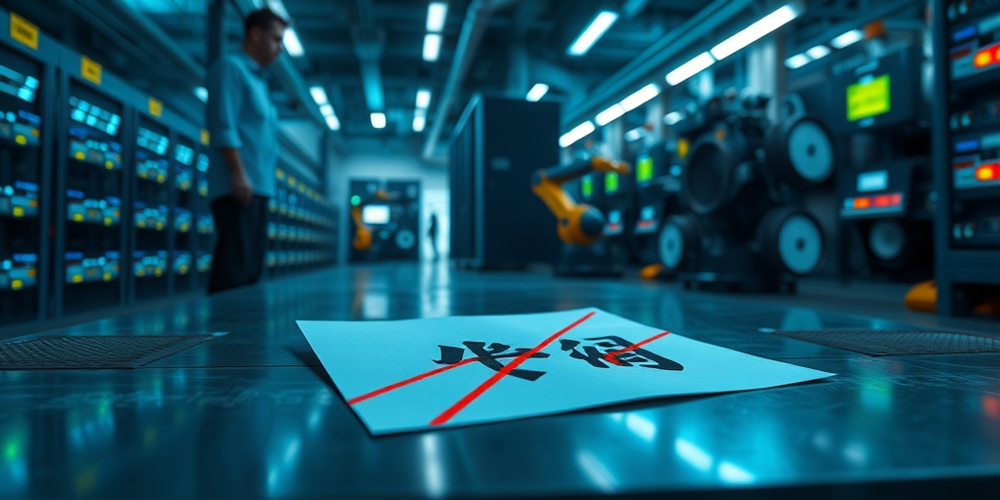
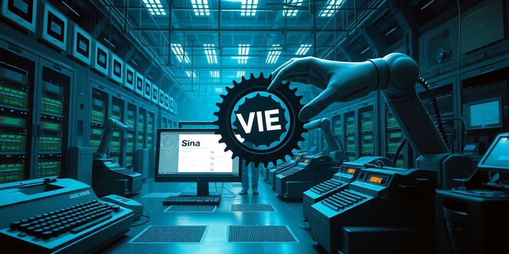
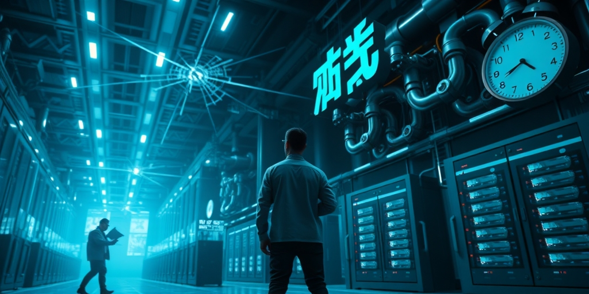

小汪老师的成长洞察 · 属于你的成长专栏
一家公司能不能在对法院说“我们两家没关系”的同时，对投资者说“我们是一家亲”？VIE架构诞生26年来，所有中概股都在走这条钢丝。2026年，一个被小红书用“汰换”二字羞辱开除的前员工，用一个人两年打下来的终审判决和一套IPO前夕的合规举报材料，把这条钢丝剪断了。他不是在复仇——他是在用VIE架构自己的内在矛盾，反制了VIE架构的发明者。

2022年5月，陈浩入职小红书，担任商业化华南直销负责人。HR帮他算过一笔账：30000股境外控股公司期权，年化价值约48.7万元。2023年12月，即将满两年、期权马上可以第一次变现的前夕，公司突然通知开除——理由是不胜任工作。
期权补偿谈崩了。更狠的是离职证明——小红书在上面写了两个字：汰换。被淘汰，被替换。这两个字成了背调的死穴，让他在随后整整两年里找不到新工作。
陈浩拿着劳动合同和期权协议把小红书告上了法庭。一次仲裁，多次庭审，两年拉锯。法庭上，小红书祭出了互联网大厂的标准防御动作——VIE架构隔离。翻译成人话：跟你签劳动合同的是国内运营主体，给你发期权的是海外壳公司。这是两家“独立”的公司。期权纠纷国内法院管不着，你去香港仲裁吧。
但2026年初，终审判决下来了。法院二审一锤定音：小红书违法解除劳动合同成立。而且——境外VIE架构期权也属于劳动报酬的一部分，境内主体必须承担赔偿责任。这是国内首例明确判决VIE期权属于劳动报酬、境内公司必须兜底的生效判例。小红书赔了85万余元，必须删掉“汰换”两个字，重新开具无争议离职证明。
VIE，Variable Interest Entity，可变利益实体。名字非常学术，逻辑却非常街头——它就是一个“法律上分开、经济上一体”的壳。
用最简单的方式说：你想在美国或香港上市，但中国政府不允许外资直接持有互联网、电信、教育等行业公司的股权。怎么办？去开曼群岛注册一家壳公司——这家公司可以合法在海外上市。但这壳公司不能直接持有中国境内公司的股权，于是你跟境内公司签一整套合同：独家技术服务协议、股权质押协议、购买选择权协议、投票权代理协议……几十份合同捆在一起，让壳公司在经济上完全控制境内公司——利润归你、决策归你、风险也归你——但工商登记上，你们是两家独立法人。
就像一个餐厅老板。他真身在北京开了家餐厅，营业执照写的是别人的名字。他又去开曼群岛注册了一家“纸上餐厅”，然后跟北京那家餐厅签了一堆合同：你赚的每一分钱都得给我、你雇谁炒谁得听我的、将来政策允许了我有权把你整个买走。上市的时候他对投资者说：“这就是我的餐厅，看这流水多漂亮。”出事了，他对法院说：“那餐厅营业执照上写的不是我啊，我们是两家独立的公司，你找他去。”
VIE的“阴阳面”就在这儿：对投资者，它是“我们是一家”；对中国法院，它是“我们是两家”；对中国监管，它是“我们名义上两家但实际上你懂的”。这不是bug，是feature。VIE就是被设计成这样的——正是因为它可以“左右互搏”，它才能同时满足境外上市要求和中国监管环境。

2000年，新浪想在美国上市。问题是——中国的《外商投资产业指导目录》把互联网内容服务列为外资禁入领域。新浪的律师团队想出了一个天才方案：不在中国注册外资公司，而是用合同控制中国公司。美国SEC接受了这个解释——只要你能证明“经济利益归你”，合并报表就可以。新浪上市成功。
此后26年，VIE从新浪的“特殊通道”变成了整个中国互联网行业的“标准基建”。阿里、百度、腾讯、京东、拼多多、美团、滴滴、小红书——几乎每一家你叫得出名字的互联网中概股，都跑在VIE上。但这个基建一直建在沙子上。中国政府从未正式立法承认VIE的合法性。每年“两会”都有人提“应该清理VIE”，每年都没有下文。这不是不作为，是两难——清理VIE，中概股全得退市；正式承认VIE，等于放弃外资准入限制。两害相权，默许是最不坏的选项。
所有人都知道VIE的“左右互搏”。投资人知道——每年招股书里都有一个冗长的“VIE风险提示”章节。律师知道——VIE搭建是红圈所的核心业务。监管知道——证监会和网信办这么多年没动VIE，不是看不见，是在等合适的时机。中概股自己最知道——每次被做空机构盯上，VIE的合法性就是第一块被搬出来的砖。
但所有人都选择不戳破。因为戳破了对谁都没好处——投资人想继续赚钱，律师想继续收费，公司想继续融资，监管想继续维持“不说破就没事”的弹性空间。这是一个“共谋的沉默”——每个玩家都从VIE的灰色中分到了自己那份好处。

那为什么是一个被开除的前员工戳破了？因为他不在这个“共谋”里。他没有股份要套现，没有客户要维护，没有仕途要规划。“汰换”两个字把他踢出了所有人的游戏，他就没有理由继续维持所有人的沉默。
而且他手里有两样别人都没有的东西：一份终审判决，和一个IPO窗口。6月中下旬，媒体曝光小红书已与高盛、中金等顶级投行合作，准备保密递表冲刺香港IPO。6月28日，陈浩在个人公众号发文，宣布已向香港交易所、香港证监会实名提交全套合规投诉材料。他把两年官司的全部卷宗——包括小红书法庭上说的“国内外公司没有关系”——打包交给了监管机构。
举报的核心逻辑极其锋利：你在国内法庭上说“我们是两家独立公司”，你在招股书里说“我们是一家亲”。两个说法不可能同时为真。如果法庭陈述是真的，你的招股书就是虚假披露。如果招股书是真的，你在法庭上就做了虚假陈述。以子之矛，攻子之盾。
陈浩的力量不是他个人的力量。他的力量来自VIE自身的结构——他只是把VIE的“左半张脸”和“右半张脸”同时拿到一张桌子上，让监管机构自己看。他没有撒谎，没有夸大，没有阴谋论。他只是把一家公司自己说过的话、自己签过的文件、自己做过的事——在国内法庭和在香港投行面前说的不同版本——摆在了一起。这个动作的门槛之低和效果之大，形成了惊人的反差。任何一个被VIE架构公司欠薪、欠期权、欠赔偿的员工，理论上都可以做同样的事——只要他打赢了官司，只要这家公司要上市。以前没有人做，不是因为难，是因为没有人意识到“你手里的判决书就是最强的武器”。
陈浩是第一张多米诺骨牌。目前香港监管系统已确认签收材料。上市也许还能上，但本来顺理成章的事被拖住了——而且市场会重新定价这个风险。
他之后，港交所对中概股VIE结构的审查一定会更严——不是因为政策变了，是因为有人证明了这件事可以做，而且做成了。以后每一家要去香港上市的中概股，都得准备好回答一个问题：“你在法庭上说过‘我们是两家独立公司’吗？如果有，招股书怎么写？”
这是VIE 26年历史上第一次，一个外部个人——不是监管、不是做空机构、不是竞对——用VIE自己的文件把VIE的合法性问题摆上了正式审查的桌面。它可能不会终结VIE，但它一定提高了VIE的维护成本。以前默许就够了，现在不行了。有人实名举报，举证材料齐全，涉及正在IPO的公司，你不查就是渎职。证监会的上市审核不能默许——申请人自己说过“我们是两家独立公司”，招股书里又说“我们合并报表”，这个矛盾不解开，信息披露这一关过不去。
陈浩的武器不是阴谋，是公开记录。他让一家公司自己跟自己打架。
写给你的话
VIE存在了26年。中国最聪明的律师、最精明的投资人、最强势的监管机构都知道它的矛盾所在。但第一个把矛盾钉死在两张正式文件之间、让它无法继续假装不存在的，是一个被写上“汰换”二字的普通员工。这件事最让人咀嚼的，不是胜诉本身——是为什么一个人能做到的事，一个行业沉默了26年。下一个陈浩会是谁？也许就是你身边那个被欠了期权、正在默默打官司的同事。他手里握着的，可能不只是赔偿金，还有一张足以让一家百亿美金公司上市计划搁浅的牌。
小汪老师的成长洞察 · 属于你的成长专栏